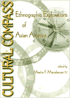

Essays by ethnographers researching their own ethnic groups
Essays by ethnographers researching their own ethnic groups


 Essays by ethnographers researching their own ethnic groups
Essays by ethnographers researching their own ethnic groups

|  |
Cultural CompassEthnographic Explorations of Asian Americaedited by Martin F. Manalansan, IVpaper EAN: 978-1-56639-773-5 (ISBN: 1-56639-773-1) |
Cultural Studies Book Award, given by the Association for Asian American Studies, 2000
"A pioneering anthology, this book foregrounds ethnography's pivotal contributions to critical inquiry in Asian American Studies, Ethnic Studies and American Studies. The essays articulate the dilemmas and possibilities that arise when minoritarian subjects write about our own communities, adding fresh voices to contemporary discussions of ethnography in Cultural Studies and in the social sciences."
—Dorinne Kondo, Professor of Anthropology and American Studies and Ethnicity; Director, Asian American Studies at the University of Southern California, and author of Crafting Selves: Power, Gender, and Discourses of Identity in a Japanese Workplace and About Face: Performing Race in Fashion and Theater
Cultural Compass rewrites the space of Asian Americans. Through innovative studies of community politics, gender, family and sexual relations, cultural events, and other sites central to the formation of ethnic and citizen identity, contributors reconfigure ethnography according to Asian American experiences in the United States. In these eleven essays, scholars in anthropology, sociology, ethnic studies, and Asian American studies reconsider traditional models for ethnographic research.
Drawing upon recent theoretical discussions and methodological innovations, the contributors explore the construction and displacement of self, community, and home integral to Asian American cultural journeys in the late twentieth century. Some discuss the unique situation of doing ethnographic work "at home"—that is researching one's own ethnic group or another group within Asian America. Others draw on rich and diverse field experiences. Whether they are doing homework or fieldwork, contributors reflect on the ways that particular matters of identity—gender, class, sexuality, ethnicity, age—play out between researchers and informants. Individual essays and the book as a whole challenge the notion of a monolithic, spatially bounded Asian American community, pointing the way to multiple sites of political struggle, cultural critique, and social change.
Excerpt available at www.temple.edu/tempress
"Cultural Compass is a thought-provoking collection that effectively stages ethnography as a means of interrogating bounded notions of community and identity, setting new terrains of debate for the geographies of transnationalism and its study. It promises to be of great value not only for Asian American Studies and Anthropology, but for interdisciplinary work in Cultural Studies, Ethnic Studies and Diaspora Studies as well."
—Kamala Visweswaran, Associate Professor of Anthropology, University of Texas at Austin
"Innovative, informative, and intelligent, the essays in the collection reconfigure ethnography according to the experiences of Asians in the United States. Individually, they provide incisive portraits of the various Asian American communities; collectively, they chart new directions for a critical Asian American ethnography that attends to multiple strategies and readings and to multiple sites of political struggles, cultural practices, and social activism."
—Yen Le Espiritu, author of Asian American Women and Men: Labor, Laws, and Love
Acknowledgments
Introduction
Part I: Writing Asian America: Locating the Field and the Home
1. Performing Ethnography in Asian American Communities: Beyond the Insider-versus-Outsider Perspective – Linda Trinh Võ
2. Researching One's Own: Negotiating Co-ethnicity in the Field – Miliann Kang
3. Chineseness across Borders: A Multi-Sited Investigation of Chinese Diaspora Identities – Andrea Louie
Part II: The Sites of Identity and Community
4. Of Palengke and Beauty Pageants: Filipino American-Style Politics in Southern California – Rick Bonus
5. Making the Biopolitical Subject: Cambodian Immigrants, Refugee Medicine and Cultural Citizenship in California – Aihwa Ong
6. Everyday Identity Work at an Asian Pacific AIDS Organization – Gina Masequesmay
7. Betrayal, Class Fantasies and the Filipino Nation in Daly City – Benito M. Vergara, Jr.
8. Sudden and Subtle Challenge: Disparity in Conception of Marriage and Gender in the Korean American Community – Kyeyoung Park
Part III: Beyond Asian America and Back
9. Identity in the Diaspora: Surprising Voices – Karen Leonard
10. Forged Transnationality and Oppositional Cosmopolitanism – Louisa Schein
11. Cultural Encompass: Looking for Direction in the Asian American Comic Book – Timothy Keeyen Choy
Contributors
Martin F. Manalansan is Assistant Professor of Anthropology at the University of Illinois, Urbana-Champaign.
Contributors: Linda Trinh Võ, Miliann Kang, Andrea Louie, Rick Bonus, Aihwa Ong, Gina Masequesmay, Benito M. Vergara Jr., Kyeyoung Park, Karen Leonard, Louisa Schein, and Timothy Keeyen Choy.
Asian American Studies
Sociology
Race and Ethnicity
Asian American History and Culture, edited by K. Scott Wong, Linda Trinh Võ, and Cathy Schlund-Vials.
Founded by Sucheng Chan in 1991, the Asian American History and Culture, series has sponsored innovative scholarship that has redefined, expanded, and advanced the field of Asian American studies while strengthening its links to related areas of scholarly inquiry and engaged critique. Like the field from which it emerged, the series remains rooted in the social sciences and humanities, encompassing multiple regions, formations, communities, and identities. Extending the vision of founding editor Sucheng Chan and emeriti editor Michael Omi and David Palumbo-Liu, series editors K. Scott Wong, Linda Trinh Võ, and Cathy Schlund-Vials continue to develop a foundational collection that embodies a range of theoretical and methodological approaches to Asian American studies.
© 2015 Temple University. All Rights Reserved. This page: http://www.temple.edu/tempress/titles/1335_reg.html.